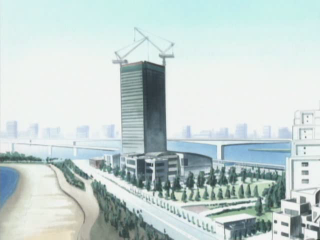

Odaiba Mansion / Searea Odaiba 3bangai
Izumi Koushirou
Kido Jou
Inoue Miyako (?)
Takaishi Takeru (?)
Hida Iori (?)
The first season kept its characters' homes closely guarded secrets for the most part, with the exception of the Yagami family. The only apartment shown more than once is Odaiba Mansion, the complex where the Izumi and Kido familes both supposedly live. It appears briefly in Adventure episode 31, Raremon! Tōkyōwan Shūgeki, as Koushirou and Tentomon sneak out of the house to battle Raremon. At this time, Koushirou is shown leaving the complex and going directly to the street. Later, as the Bakemon are breaking into the mansion and capturing all of the families, the animators focus on the ground-floor unit that supposedly belongs to the Izumi family.
In reality, there is no building in Odaiba called "Odaiba Mansion." (As noted elsewhere on the site, a "mansion" or "manshon" is the Japanese term for an apartment building.) The complex where Koushirou and Jou supposedly reside is actually the Searea Odaiba Sanbangai Icchoume Apartments (roughly Odaiba #3, First Block) located next to Odaiba Rainbow-koen. It is not shown in detail in the first season at all, but for observant viewers, the power sent to Imperialdramon by Gennai in episode 39 of 02, Zen'in Shutsudō! Imperialdramon, explodes out of this building. This is fairly consistent with the path Koushirou is shown running on the way to Taichi's house in Bokura no War Game! and the way he leaves to get a cell phone - Searea Odaiba Sanbangai and Searea Odaiba Gobangai, where the Yagamis live, are no more than five minutes walk apart. However, the portrayal of the building is slightly inconsistent in that in Adventure episode 31 the mansion appears to exit onto the street, whereas the real Sanbangai opens directly into Rainbow-koen on the front.
There is also some evidence that Takeru, Iori and Miyako live in this complex, though not in the Icchoume Apartments, but rather Sanbangai Tomin Towers buildings. At first glance, Ichibangai seemed like a stronger contender when this site first went live, but more recently I've changed my thinking toward Sanbangai, thanks to hints given in episode 35, Bakushin! BlackWargreymon. While out in front of the school after returning from the Digital World, Takeru says a hasty goodbye and runs in the direction of the bridge, while Miyako follows, saying "But we live in the same mansion!" This indicates that he is going in the wrong direction from their houses, which debunks my theory that Takeru and company moved into Ichibangai during its completion between 1999 and 2002.
Later in the episode, the Palette Town ferris wheel can be seen as a backdrop for Takeru's balcony, reinforcing the theory.
Initially, I thought that the convenience store that Miyako's family supposedly runs (AiMart in the series) was probably the former 7-11 located in the Searea Odaiba Ichibangai 3rd Building Icchoume Apartments (now the My Basket Daiba 1-Chome Shop, as of 2014-ish), the frontmost of the three buildings beyond the school. However, the streetside building is only 5 floors, and the elevator scene in the first episode as well as the balcony scene from episode 35 would probably have the viewers believe that they in fact live in a higher tower than that. The kids are also seen approaching the school from the south on numerous occasions. Thus, Sanbangai is the safest bet. The very top of the building is visible in the Sora screenshot further down this page.
Searea Odaiba 5bangai
Yagami Taichi
Yagami Hikari
Ishida Yamato
Takenouchi Sora
Motomiya Daisuke
Searea was the name given to the first blocks of apartments built in Odaiba during its revitalization plan in 1996. Searea Odaiba 5bangai (Gobangai) is located just a few steps away from Odaiba-kaihinkoen Station and across the street (Shiria-mae Crossing, see the Odaiba-kaihinkoen section for more info) from Searea Odaiba 3bangai (Sanbangai), where the Izumi and Kido families live.
It may seem odd or too coincidental that nearly all of the Chosen live in the same building or very nearby, but it's important to remember that Odaiba is a very small place, more like a little town in the middle of a city. All the residences tend to be clustered near the train stations and shopping/entertainment zones, and at the time, these were concentrated around Odaiba-kaihinkoen Station. Maruetsu was the only grocery store on the island until as recently as 2007. In 1999 and 2000, during the airing of the first two seasons, I would estimate that about 90% of the population of Odaiba was in the Kahinkoen area. Thus it is not at stretch at all to imagine so many of the Chosen being in the Searea Gobangai complexes, a set of four buildings built on a raised platform level with Odaiba-kaihinkoen station. The grocery store is located under the west complexes, while the east complexes face the Shiria-mae pedestrian crossing destroyed by Ogremon and Koromon in episode 21, Koromon Tōkyō Daigekitotsu!
The depiction of the Searea areas in the Digimon series appear to have been deliberately vague. In Adventure, only the Yagami home was ever shown in detail, but in a way that made the actual building of the four almost impossible to determine. See the Yagami section for photos and details on this. However, the writers would go on to depict not just Taichi and Hikari but a minimum of four Chosen living in Searea Gobangai apartments. This does involve some detective work, as once again it is never outwardly stated.
Taichi & Hikari - see the Yagami section.
Sora - Sora is depicted walking between the buildings at the very beginning of Bokura no War Game! There is a strong possibility that she lives in one of them. However, Bokura no War Game!'s depictions of the Searea buildings are not entirely consistent with those of the TV series, as usual.
Yamato - There is a good chance that Sora and Yamato live in the same building, if observations of Sora's home prove correct. Yamato and Taichi are shown meeting between two buildings that they seem to have just exited in 02 episode 7, Hikari no Kioku.
(This would seem to be the same position as the Sora screenshot above, but from the opposite angle.)
Daisuke - In the same scene of episode 7, while discussing going to Daisuke's house, Taichi and Yamato glance up at an adjacent building. Since it was established in another episode that Daisuke did live in a Gobangai complex, it is very likely that of the three Gobangai buildings closest to the station, Taichi, Yamato and Daisuke each reside in one. In episode 39 of 02, Zen'in Shutsudō! Imperialdramon, as the three of them as well as Hikari are seen exiting the back stairs of the Gobangai complex en route to Koushirou's house.
Searea Odaiba 1bangai
Tachikawa Mimi
Ichibangai is the block of Searea apartments located closest to the Rainbow Bridge. There are three buildings in this block. It is not entirely consistent with its depiction in the series, as with many of the other residences.
Since Ichibangai is the only apartment block in the direction Mimi and her father leave the park from (episode 35), there is a good chance that she lives here - even though it seems strange that her father would walk through the park to get home. The park provides access only to the Icchoume apartments, where the Izumi and Kido families live, but the fact that Koushirou and Jou's residences were explicitly tied together in the show makes me fairly certain that Mimi cannot be in the same building without it being mentioned. In Digimon Adventure, the two bigger towers of Searea Ichibangai are depicted as being still under construction, as they were in 1999. Therefore, the chances are good that Mimi lives in the building closest to the park, as I can't yet confirm whether or not any of the other buildings had residences at the time. Sanbangai, where Koushirou and Jou live, also is visible in this screenshot, on the right hand side.

The Tomin Towers (one one of which is visible above) would be completed by the time the buildings were depicted in 02.
Ichibangai is just a few steps from the school, visible in this screenshot to the left of the green space (Rainbow-koen). Once again a case could be made that a staff member lives at Ichibangai, as the side of the school seems like a closer match for the way the school building is drawn in 02.
Google Maps Link: Searea Ichibangai from the street. Give it a moment to load - move the camera right to see the school, left to the Bridge, 180 degrees for the beach.
Tamachi T.M. Mansion
Ichijouji Ken
At first glance the Ichijouji residence seems like it might be the easiest of the Chosens' houses to find, as in episode 8 of 02, Digimon Kaiser no Kodoku, Koushirou helpfully provides viewers with a map, while Hikari points out where on the map Ken's apartment would be. We are given an exterior view AND an apartment number. Too good to be true, of course, as the map hardly resembles Tamachi Station, or any other station in the area. Back to the drawing board!
Setagaya
Takaishi Takeru
During Digimon Adventure, Takeru and his mother Natsuko are said to live in Sangenjaya, which is part of Setagaya-ku. This ward is quite far from Minato-ku, where the other Chosen all live, and is serviced by the Tōkyū Den-en-toshi Line, two stops away from Shibuya Station. Many subway Hanzomon Line trains turn into Den-en-toshi trains at Shibuya, and vice-versa.
While Yamato and Takeru do return there in episode 33, Pump to Gotsu wa Shibuyakei Digimon, essentially nothing about Takeru's home in Adventure is shown to viewers as he is only there for a few seconds of screentime in episode 35. The flashback scenes of the Ishida family prior to the divorce took place in Hikarigaoka. Not long before the events of 02, Takeru and Natsuko would move to Odaiba and take up residence in the Kaihinkoen area.
{kind=link}
{kind=link}
{kind=link}